Cinco preguntas antes de abrir el libro
Como siempre: responde con lo que ya tienes. No hay nota. Al final de la mañana volvemos sobre las cinco y verás cuántas contestas distinto.
1 · Dos por ciento, veinte por ciento
El encéfalo pesa el 2 % del cuerpo y gasta el 20 % del oxígeno y de la glucosa, incluso en reposo. ¿Por qué te mareas si te levantas de golpe después de estar mucho rato sentado?
2 · La mano del otro lado
Una lesión en el hemisferio cerebral izquierdo debilita la mano derecha. ¿Por qué el lado contrario?
3 · La aguja que no toca la médula
En la punción lumbar se clava una aguja dentro del conducto vertebral, entre L3 y L4, y no se lesiona la médula. ¿Cómo es posible, si la médula va por dentro de la columna?
4 · Antes de sentirlo
Retiras la mano de una olla caliente antes de notar que quema. ¿Quién tomó esa decisión, si todavía no te habías enterado?
5 · El antibiótico que no llega
Muchos antibióticos que curan una infección del pulmón no sirven para una del encéfalo, aunque la sangre llegue a los dos. ¿Qué los detiene?
El mapa del sistema nervioso
Pesa unos 2 kg —el 3 % del cuerpo— y es de los sistemas más pequeños y más complejos a la vez. Antes de entrar en las piezas conviene tener el mapa, porque casi todo lo que viene después es saber de qué lado del mapa está cada estructura.
Sistema nervioso central (SNC)
El encéfalo, dentro del cráneo, y la médula espinal, dentro de la columna. Se unen a través del foramen magno. Aquí se procesa la información, se decide, se piensa y se recuerda.
Sistema nervioso periférico (SNP)
Todo el tejido nervioso fuera del SNC: los 12 pares de nervios craneales, los 31 pares de nervios espinales, los ganglios y los receptores sensitivos. Es el cableado que conecta el SNC con el resto del cuerpo.
El periférico, según a quién obedece
Somático
Voluntario. Lleva al SNC lo que perciben la piel, los músculos y los sentidos especiales —la visión incluida— y manda órdenes solo al músculo esquelético.
Autónomo
Involuntario. Gobierna el músculo liso, el cardíaco y las glándulas. Tiene dos divisiones que casi siempre actúan en sentido opuesto: la simpática, de «lucha o huida», y la parasimpática, de «reposo y digestión».
Entérico
Una red de neuronas en la pared del tubo digestivo que funciona casi por su cuenta. Tortora lo llama el «cerebro visceral». Hoy solo lo nombramos.
En el ojo conviven los dos sistemas motores. El músculo que gira el globo hacia afuera es esquelético y obedece al somático; el esfínter de la pupila es liso y lo gobierna el autónomo. En la clase 7 lo viste desde el músculo; hoy lo vas a ver desde el nervio.
Tres funciones, siempre en el mismo orden
- Sensitiva. Los receptores detectan un estímulo. Ves venir un balón: la retina lo registra.
- Integradora. El SNC analiza la información y decide. El encéfalo calcula hacia dónde va el balón.
- Motora. El SNC activa efectores —músculos y glándulas—. Apartas la cabeza.
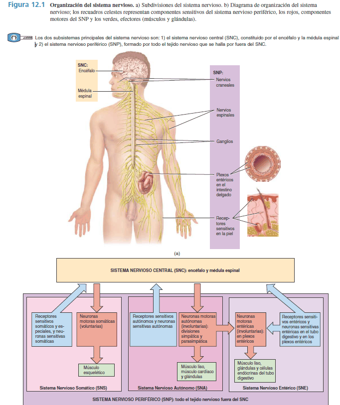
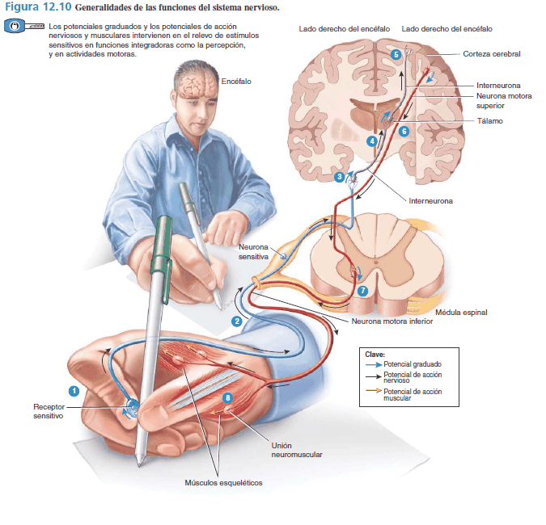
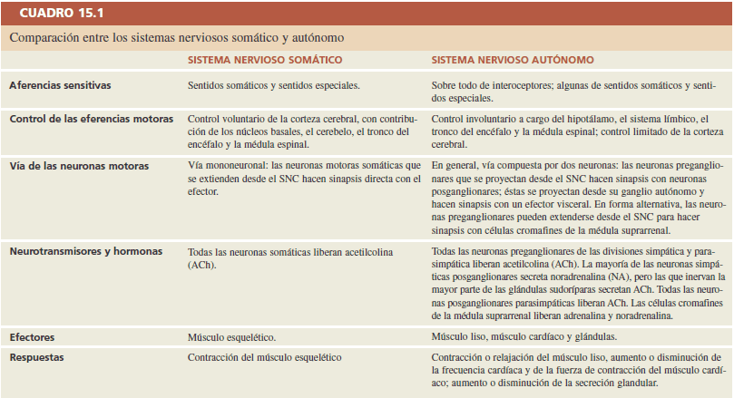
No trabaja solo
El sistema nervioso regula, junto con las hormonas, a casi todos los demás sistemas del cuerpo: el corazón, la respiración, la digestión, los músculos. No hace falta memorizar la tabla de abajo; basta con ver que no hay una sola fila vacía.
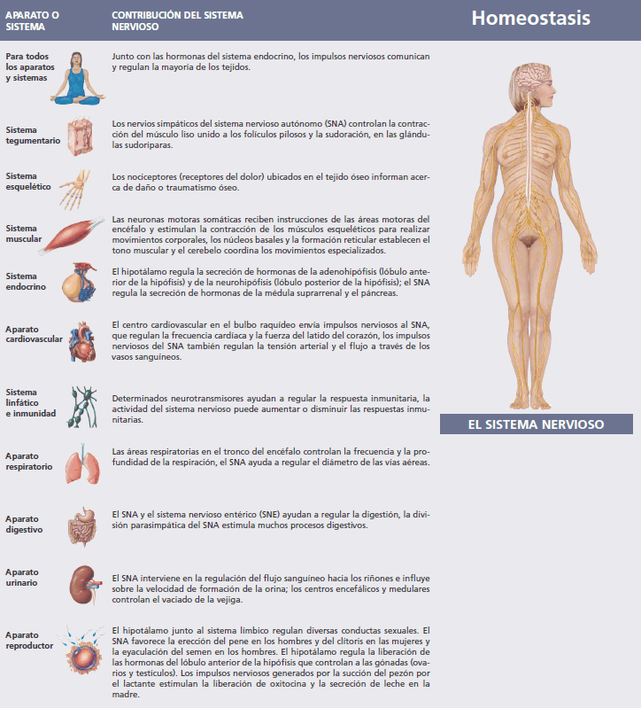
1. ¿Cuál de estas estructuras pertenece al sistema nervioso periférico?
Las células: la neurona y quien la cuida
El tejido nervioso tiene dos tipos de células. Las neuronas hacen el trabajo —sentir, pensar, recordar, mover— y, a cambio de especializarse tanto, perdieron la capacidad de dividirse. La neuroglia las sostiene, las alimenta y las protege.
La neurona en tres partes
Cuerpo celular
Tiene el núcleo y los orgánulos. Fabrica las proteínas que la neurona necesita.
Dendritas
Prolongaciones cortas y ramificadas que reciben la señal.
Axón
Una sola prolongación, a veces muy larga, que conduce la señal hacia otra célula.
Tres formas, según cuántas prolongaciones salen del cuerpo
- Multipolar — varias dendritas y un axón. Son casi todas las del encéfalo y la médula, y todas las motoras.
- Bipolar — una dendrita y un axón. Están en la retina, el oído interno y el área olfatoria.
- Unipolar —más exactamente, seudounipolar— una sola prolongación que se divide en dos. Son las sensitivas de los ganglios de las raíces posteriores.
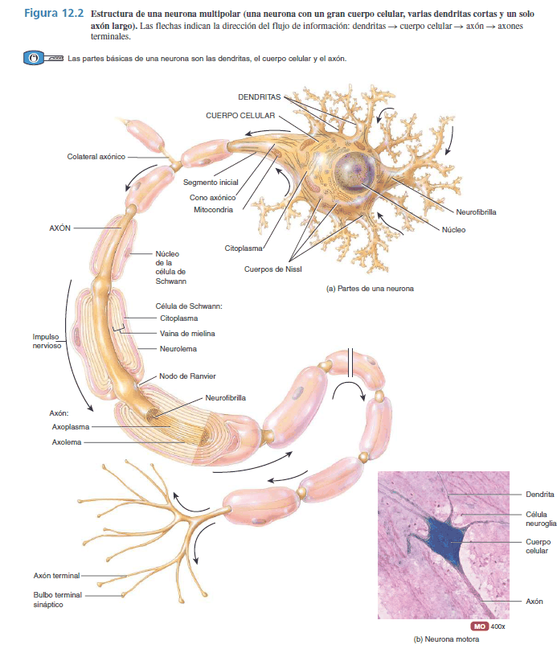
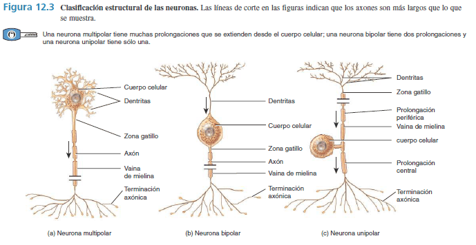
👁 Interfaz optométrica
La neurona bipolar del libro es la de tu especialidad. En la retina, los conos y bastones captan la luz y pasan la señal a las células bipolares; éstas la entregan a las células ganglionares, y los axones de todas las ganglionares de una retina se reúnen para formar el nervio óptico. La retina, en otras palabras, ya es tejido nervioso trabajando.
La neuroglia: seis tipos, dos territorios
En el SNC
Astrocitos — sostienen las neuronas y rodean los capilares: forman parte
de la barrera hematoencefálica.
Oligodendrocitos — fabrican la mielina del SNC.
Microglía — defensa: fagocitan restos y microbios.
Células ependimarias — tapizan los ventrículos y producen líquido
cefalorraquídeo.
En el SNP
Células de Schwann — fabrican la mielina del SNP; cada una envuelve un
solo axón.
Células satélite — rodean los cuerpos neuronales dentro de los
ganglios.
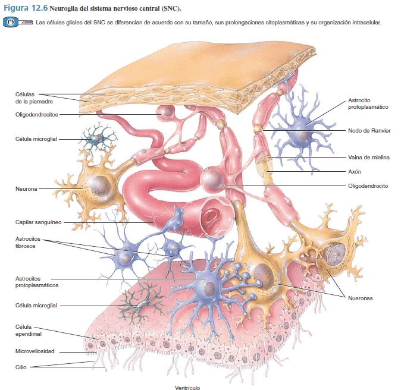
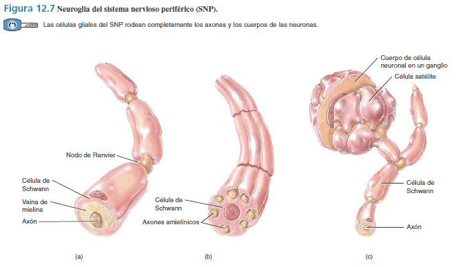
La mielina
Es una vaina de muchas capas de lípidos y proteínas que envuelve el axón. Funciona como aislante y hace que la señal viaje más rápido. La fabrican dos células distintas según el territorio: la de Schwann en el SNP y el oligodendrocito en el SNC. Un oligodendrocito mieliniza varios axones a la vez; una célula de Schwann, uno solo.
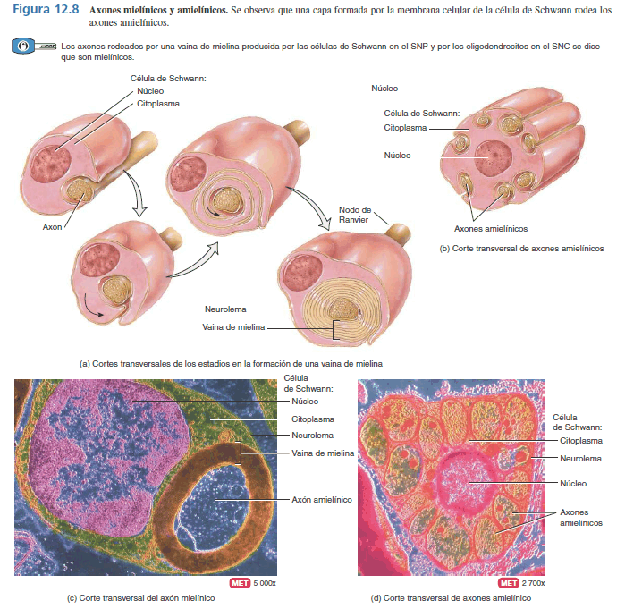
Ejercicio · Nómbrala sin mirar
Esta neurona no lleva rótulos a propósito. Antes de abrir la respuesta, nombra en voz alta cada parte que reconozcas.
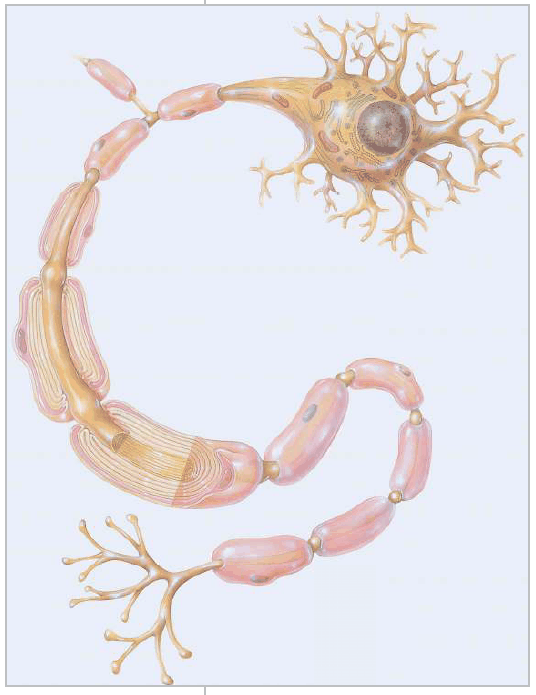
Ver las respuestas
Arriba a la derecha, las dendritas y el cuerpo celular con su núcleo. De él sale el axón, envuelto en segmentos por células de Schwann que forman la vaina de mielina —en el tramo abierto se ven sus capas enrolladas—. Los estrechamientos entre dos células de Schwann son los nódulos, donde el axón queda al descubierto. Abajo a la izquierda, las terminales del axón. Como la mielina la hace la célula de Schwann, esta neurona es del SNP.
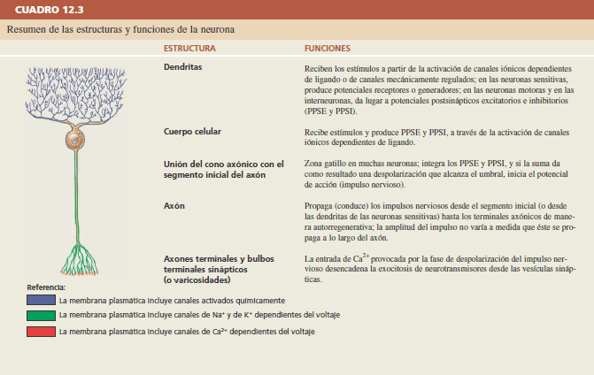
2. En la retina, una neurona recibe la señal por una sola dendrita y la entrega por un solo axón. ¿Qué tipo estructural es?
3. ¿Qué célula forma la vaina de mielina de un nervio espinal?
Gris y blanca, núcleo y ganglio, tracto y nervio
Tres pares de palabras que se confunden todo el semestre. Vale la pena fijarlos hoy, porque con ellos se lee cualquier lámina del sistema nervioso.
Sustancia gris
Donde están los cuerpos neuronales, las dendritas, axones sin mielina y glía. Se ve grisácea porque no hay mielina.
Sustancia blanca
Donde van los axones con mielina. Se ve blanca porque la mielina, que es grasa, es blanca.
Y se reparten al revés en los dos grandes órganos del SNC: en la médula la gris está dentro, en forma de H, rodeada de blanca; en el cerebro y el cerebelo la gris está fuera —es la corteza— y la blanca dentro.
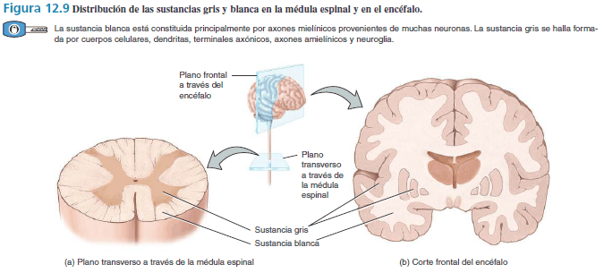
El mismo objeto con dos nombres, según dónde esté
Núcleo · ganglio
Un grupo de cuerpos neuronales se llama núcleo si está dentro del SNC y ganglio si está fuera, en el SNP.
Tracto · nervio
Un haz de axones se llama tracto si va dentro del SNC y nervio si va fuera, en el SNP.
La regla cabe en una línea: SNC → núcleo y tracto; SNP → ganglio y nervio. En la sesión 2 vas a encontrar el ganglio ciliar: está dentro de la órbita, fuera del encéfalo, y por eso es ganglio y no núcleo.
4. En el mesencéfalo hay un grupo de cuerpos neuronales del que nacen los axones del nervio oculomotor. ¿Cómo se llama correctamente esa agrupación?
Hueso, meninges, líquido y una barrera
El tejido nervioso es muy delicado y se repara mal, así que está protegido en capas: primero el hueso —el cráneo y la columna—, después las meninges, luego un líquido que amortigua, y por último una barrera química que decide qué entra desde la sangre.
Las meninges: tres membranas, de fuera hacia dentro
Duramadre
La externa, gruesa y dura. En el cráneo tiene dos capas que se separan en algunos puntos para formar los senos venosos, por donde sale la sangre del encéfalo. En la columna tiene una sola capa y forma un saco que llega hasta S2.
Aracnoides
La media. Delgada y sin vasos; sus fibras finas recuerdan una tela de araña, de ahí el nombre.
Piamadre
La interna, finísima y pegada a la superficie del encéfalo y de la médula. Lleva muchos vasos. En la médula forma los ligamentos dentados, que la mantienen suspendida.
Entre las capas quedan espacios, y conviene saber cuál contiene qué:
- Epidural — entre la duramadre y el hueso, con grasa. Existe solo en la columna: alrededor del encéfalo no hay espacio epidural.
- Subdural — entre la duramadre y la aracnoides, muy estrecho.
- Subaracnoideo — entre la aracnoides y la piamadre. Aquí circula el líquido cefalorraquídeo.
En el cráneo, la duramadre forma además tres tabiques que separan partes del encéfalo: la hoz del cerebro, entre los dos hemisferios; la hoz del cerebelo, entre los dos lados del cerebelo; y la tienda del cerebelo, que separa el cerebro del cerebelo.
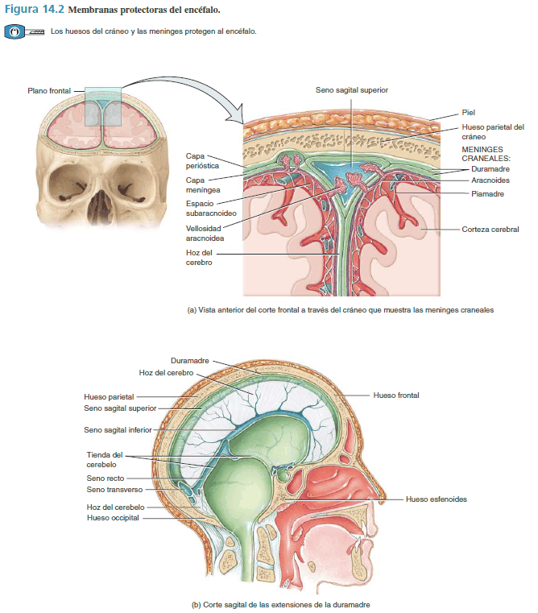
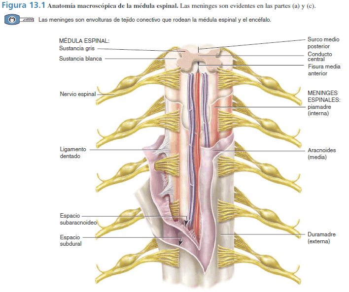
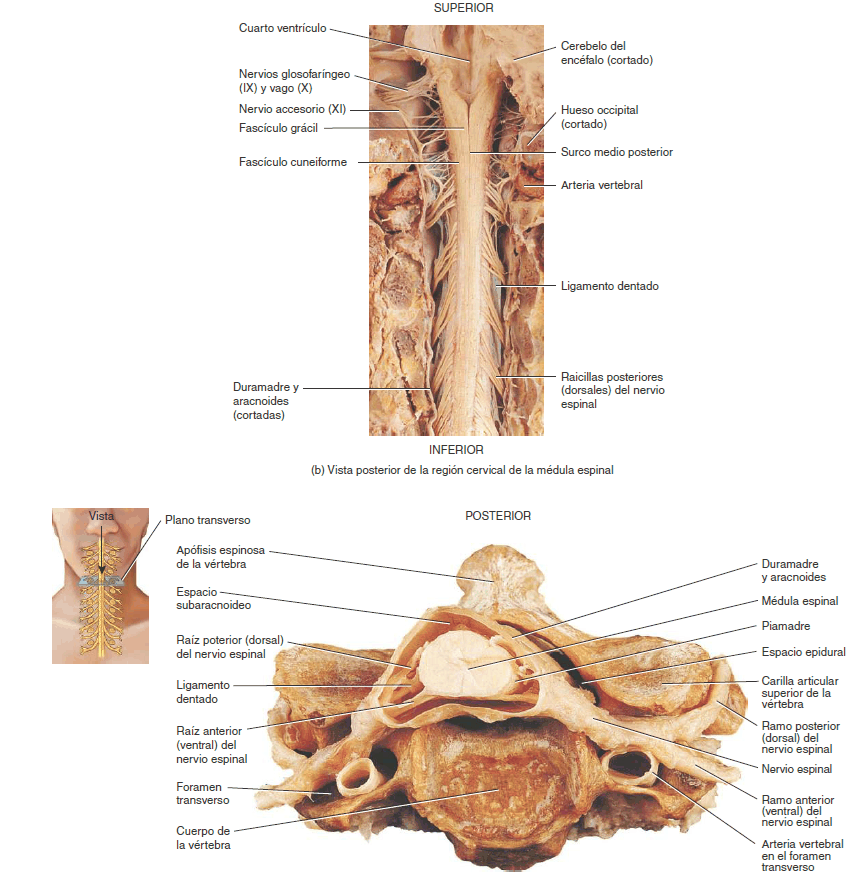
El líquido cefalorraquídeo (LCR)
Es un líquido claro e incoloro, casi todo agua: entre 80 y 150 mL en el adulto. Tiene tres funciones: amortigua los golpes —el encéfalo literalmente flota—, mantiene el medio químico estable y sirve para intercambiar nutrientes y desechos con el tejido nervioso.
Se fabrica en los plexos coroideos, redes de capilares en las paredes de los ventrículos cubiertas por células ependimarias. Los ventrículos son cuatro cavidades dentro del encéfalo: dos laterales, uno en cada hemisferio; el tercero, en la línea media; y el cuarto, entre el tronco del encéfalo y el cerebelo.
- Se forma sobre todo en los ventrículos laterales.
- Pasa al tercer ventrículo por los forámenes interventriculares.
- Baja al cuarto ventrículo por el acueducto del mesencéfalo.
- Sale al espacio subaracnoideo por tres aberturas del cuarto ventrículo, y baja también por el conducto central de la médula.
- Se reabsorbe en las vellosidades aracnoideas, que desembocan en el seno sagital superior y devuelven el líquido a la sangre venosa.
Se forma a unos 20 mL por hora —casi medio litro al día— y se reabsorbe exactamente al mismo ritmo. Por eso el volumen y la presión se mantienen constantes. Todo el sistema depende de ese equilibrio.
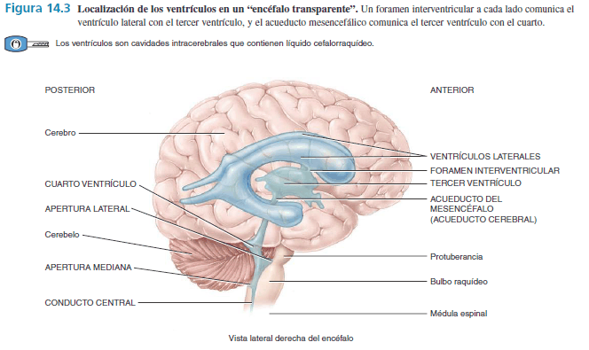
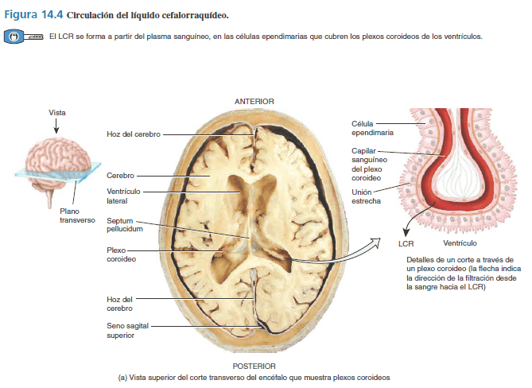
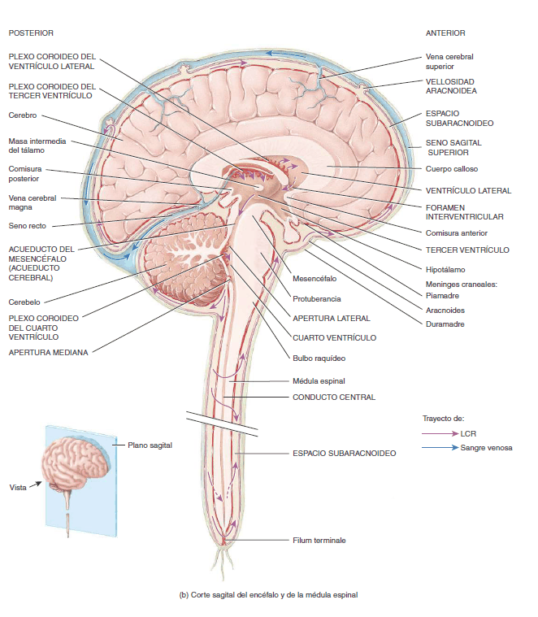
Para qué sirve saberlo
Punción lumbar. La médula termina en L2, pero las meninges y el LCR siguen hasta S2. Entre esas dos alturas hay LCR y no hay médula, así que la aguja se introduce entre L3 y L4 o entre L4 y L5: se obtiene líquido sin riesgo de tocar la médula. La línea que une los puntos más altos de las crestas ilíacas pasa por L4 y sirve de referencia.
Hidrocefalia. Si el LCR no puede salir de los ventrículos, o no se reabsorbe, se acumula y su presión sube. En un lactante, con las fontanelas abiertas, la cabeza se abomba; en un adulto, con el cráneo ya cerrado, es una urgencia.
La barrera hematoencefálica
Los capilares del encéfalo son distintos a los del resto del cuerpo: sus células están unidas por uniones estrechas, rodeadas por una membrana basal gruesa y por prolongaciones de astrocitos. El resultado es un filtro. Pasan con facilidad las sustancias liposolubles —oxígeno, dióxido de carbono, alcohol, la mayoría de los anestésicos—, y la glucosa entra por transporte activo. No pasan las proteínas ni muchos antibióticos.
Y el encéfalo lo necesita todo continuamente: pesa el 2 % del cuerpo y consume el 20 % del oxígeno y de la glucosa, porque sus neuronas fabrican energía casi solo con glucosa y oxígeno y apenas la almacenan. Le llega la sangre por las carótidas internas y las vertebrales. Uno o dos minutos sin irrigación ya alteran su función; cuatro sin oxígeno pueden dañarlo para siempre.
5. ¿Por qué espacio circula el líquido cefalorraquídeo alrededor del encéfalo y de la médula?
6. ¿Qué hay alrededor de la médula espinal pero NO alrededor del encéfalo?
7. ¿Por qué la presión del LCR se mantiene normalmente constante?
La médula por fuera y por dentro
Por fuera
Es un cilindro de unos 42 a 45 cm y 2 cm de grosor que sale del bulbo raquídeo y baja por el conducto vertebral hasta el borde superior de L2. En el recién nacido llega más abajo, hasta L3 o L4: la columna sigue creciendo después de que la médula se detiene, alrededor de los cuatro o cinco años.
- Dos engrosamientos: el cervical (C4–T1), de donde salen los nervios de los miembros superiores, y el lumbar (T9–T12), para los inferiores.
- Cono medular: el extremo afilado donde termina, entre L1 y L2.
- Filum terminale: una prolongación de la piamadre que la ancla al cóccix.
- Cola de caballo: las raíces lumbares y sacras, que bajan por el conducto antes de salir, como mechones de pelo.
De ella salen 31 pares de nervios espinales: 8 cervicales, 12 torácicos, 5 lumbares, 5 sacros y 1 coccígeo. Cada nervio se une a la médula por dos raíces:
Raíz posterior (dorsal)
Sensitiva. Trae la información de la piel, los músculos y los órganos. Tiene un engrosamiento, el ganglio de la raíz posterior, donde están los cuerpos de las neuronas sensitivas.
Raíz anterior (ventral)
Motora. Lleva las órdenes hacia los músculos y las glándulas. Al unirse las dos raíces, el nervio espinal resultante es mixto.
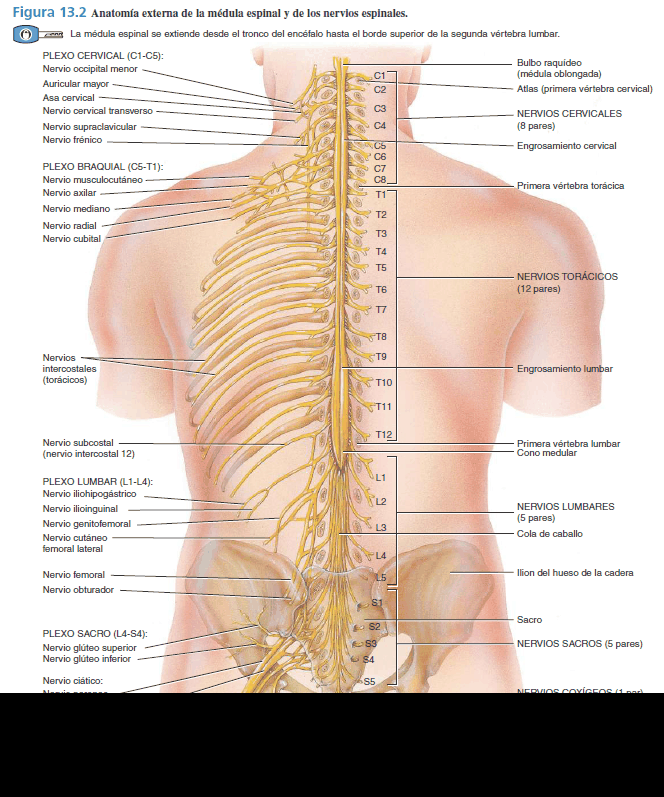
Por dentro
En un corte, la sustancia gris dibuja una H o una mariposa en el centro, y la blanca la rodea. En medio de la H está el conducto central, lleno de LCR, que se continúa hacia arriba con el cuarto ventrículo.
Astas posteriores
Reciben lo sensitivo que entra por la raíz posterior.
Astas anteriores
Tienen los cuerpos de las neuronas motoras somáticas, que mueven el músculo esquelético.
Astas laterales
Las neuronas motoras autónomas. Solo existen en los segmentos torácicos y lumbares altos.
La sustancia blanca se organiza en columnas —anterior, posterior y lateral— recorridas por tractos: los ascendentes llevan información sensitiva hacia el encéfalo y los descendentes traen órdenes motoras desde él. Por eso la médula hace dos trabajos: conduce señales entre el cuerpo y el encéfalo e integra respuestas por su cuenta, como vas a ver en la siguiente estación.
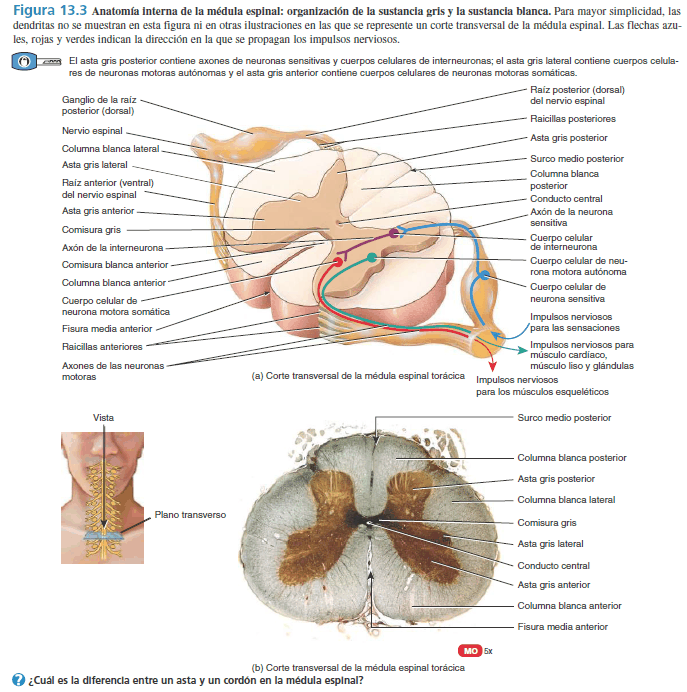
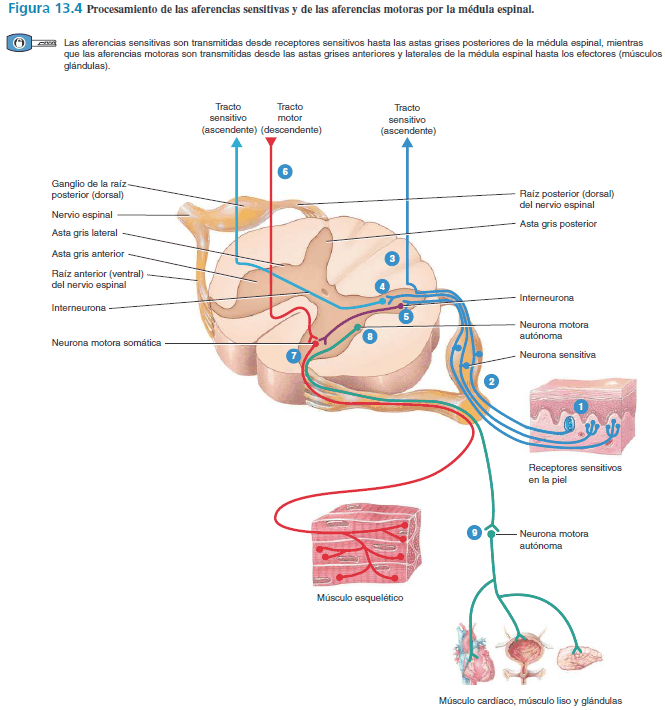
8. Un corte daña solo la raíz posterior de un nervio espinal. ¿Qué pierde la región que inerva?
El arco reflejo
Un reflejo es una respuesta rápida, involuntaria y predecible ante un estímulo. El circuito que lo produce se llama arco reflejo, y tiene siempre las mismas cinco piezas:
- Receptor sensitivo — detecta el estímulo.
- Neurona sensitiva — lleva la señal al SNC.
- Centro integrador — dentro del SNC, decide la respuesta. Si hay una sola sinapsis el reflejo es monosináptico; si hay varias, polisináptico.
- Neurona motora — lleva la orden desde el SNC.
- Efector — el músculo o la glándula que responde.
Si el centro integrador está en la médula es un reflejo espinal; si está en el tronco del encéfalo, un reflejo craneal. Aquí está la respuesta a la pregunta 4 de la mañana: cuando retiras la mano de la olla, la médula ya respondió antes de que la información llegara a la corteza cerebral, que es donde «te enteras».
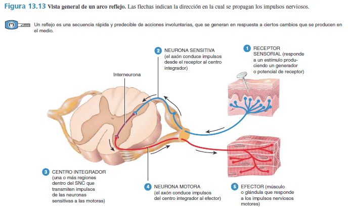
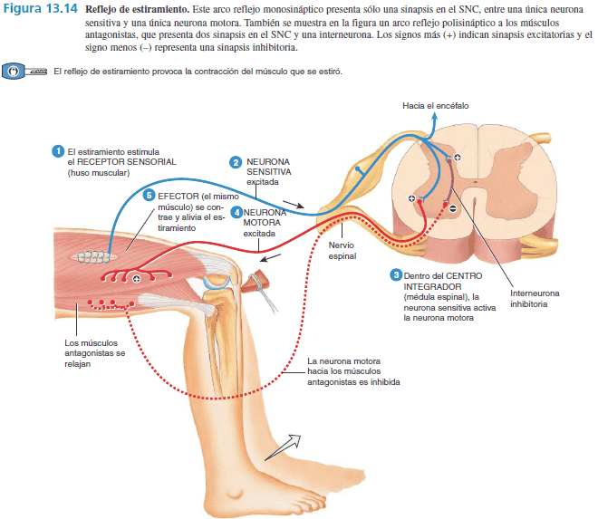
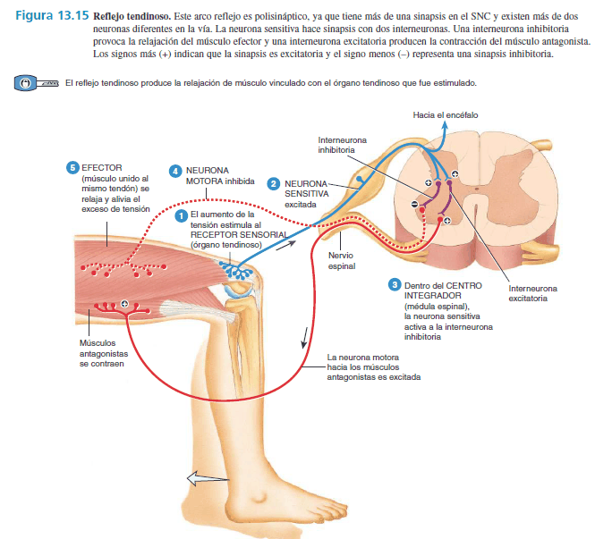
Guárdate estas cinco piezas: en la sesión 2 vas a ver que el reflejo de la pupila tiene exactamente las mismas. Su receptor está en la retina y su centro integrador, en el tronco del encéfalo.
9. De las cinco piezas del arco reflejo, ¿cuál está siempre dentro del SNC?
El tronco del encéfalo y el cerebelo
El encéfalo tiene cuatro partes: el tronco del encéfalo, el cerebelo, el diencéfalo y el cerebro. Las recorremos de abajo arriba, en el orden en que la médula se va convirtiendo en encéfalo.
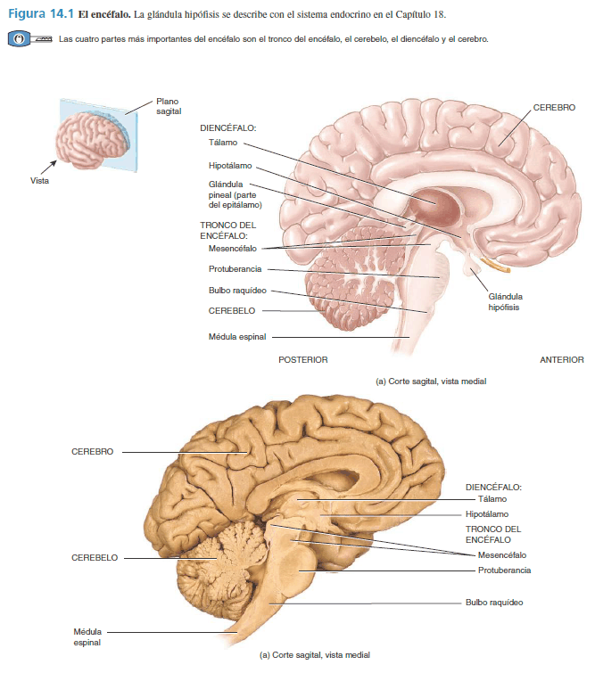
El tronco del encéfalo: tres pisos
Se continúa con la médula y está formado, de abajo arriba, por el bulbo raquídeo, la protuberancia y el mesencéfalo. Por él pasan todas las vías que suben y bajan entre la médula y el resto del encéfalo, y de él salen diez de los doce pares craneales.
Bulbo raquídeo
Unos 3 cm, desde el foramen magno. Tiene los centros vitales: el cardiovascular y el del ritmo respiratorio, y los reflejos de tos, deglución, vómito, estornudo e hipo. En su cara anterior, las pirámides.
Protuberancia (puente)
Unos 2,5 cm. Hace de puente entre el cerebro y el cerebelo, y ayuda a controlar la respiración. Tiene los núcleos de los pares V, VI, VII y VIII.
Mesencéfalo
Unos 2,5 cm, atravesado por el acueducto. Por delante, los pedúnculos cerebrales, con las vías motoras. Por detrás, cuatro relieves: los colículos. Tiene los núcleos de los pares III y IV.
Por qué cada hemisferio mueve el lado contrario. Justo encima de la unión con la médula, cerca del 90 % de los axones motores de cada pirámide cruza al otro lado. Ese cruce se llama decusación de las pirámides, y es la respuesta a la pregunta 2 de la mañana: la lesión del hemisferio izquierdo debilita la mano derecha.
Los dos colículos de arriba, los superiores, son centros de reflejos visuales. Por circuitos que van de la retina al colículo y de él a los músculos del ojo, te permiten seguir con la mirada un objeto que se mueve —un auto que pasa— o fijarla en uno quieto, como esta línea. También giran la cabeza y los ojos hacia un estímulo visual. Los dos de abajo, los inferiores, hacen lo mismo con el sonido.
A lo largo de todo el tronco se extiende la formación reticular, una red de sustancia gris y blanca. Su parte ascendente —el sistema activador reticular— mantiene la conciencia y el estado de alerta, y filtra la información sin importancia. Cuando se inactiva, dormimos; cuando se daña, aparece el coma. Los anestésicos generales actúan sobre ella. Curiosamente, no recibe información del olfato.
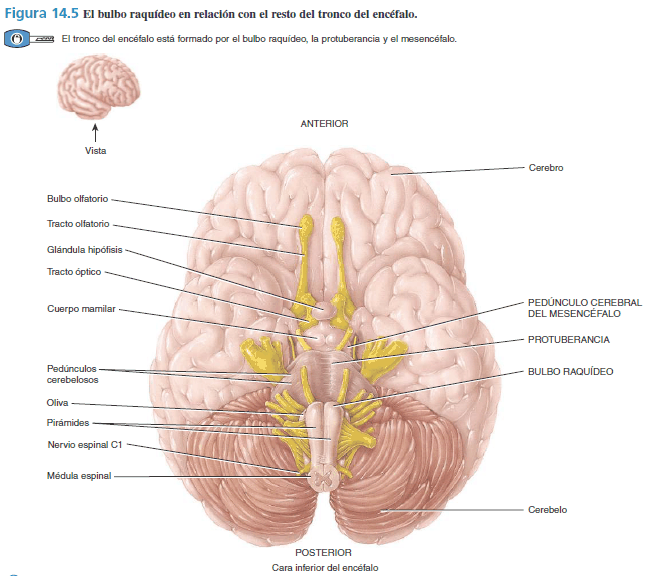
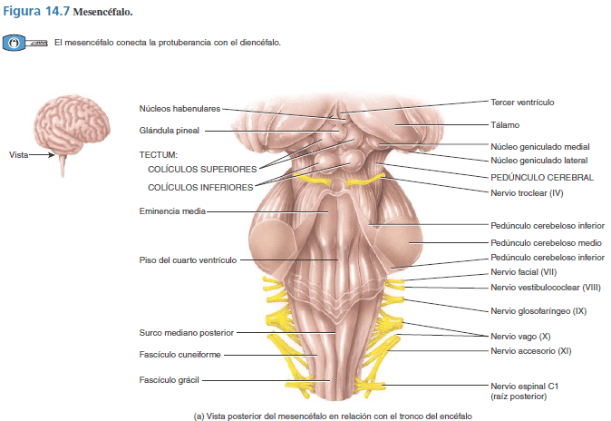
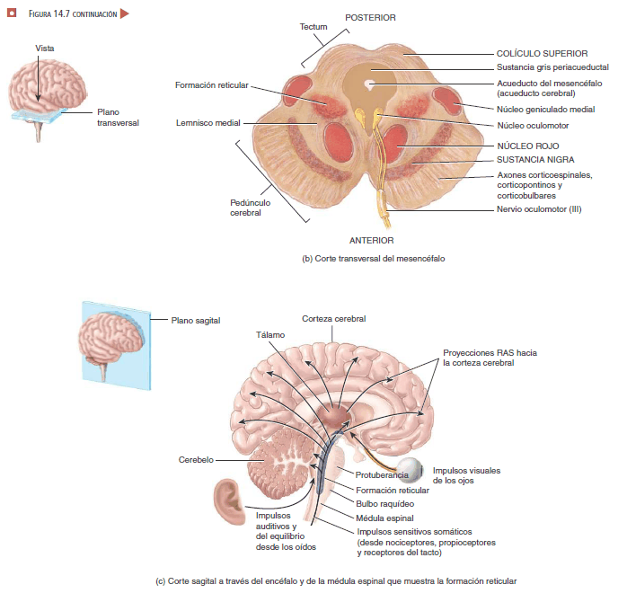
👁 Interfaz optométrica
El tronco del encéfalo es la sala de máquinas del ojo. De él salen los nervios que mueven el globo —el III y el IV del mesencéfalo, el VI de la protuberancia—, el que da sensibilidad a la córnea —el V— y el que cierra el párpado —el VII—. Y en él están los colículos superiores, que conectan lo que ve la retina con esos músculos. En la sesión 2 seguimos cada uno de esos cables.
El cerebelo
Está detrás del bulbo y la protuberancia, y la tienda del cerebelo lo separa del cerebro. Es el segundo en tamaño: una décima parte de la masa del encéfalo, pero con la mitad de sus neuronas. Visto desde arriba parece una mariposa: el vermis en el centro y los dos hemisferios a los lados. Su corteza gris muy plegada cubre una sustancia blanca ramificada, el árbol de la vida, y se une al tronco por tres pares de pedúnculos.
Su trabajo es comparar el movimiento que el cerebro ordenó con el que de verdad está ocurriendo, y corregirlo sobre la marcha. Además es la región principal del encéfalo para la postura y el equilibrio. Cuando falla aparece la ataxia: movimientos torpes y descoordinados, aunque la fuerza sea normal. El alcohol inhibe el cerebelo, y por eso las pruebas de sobriedad piden tocarse la nariz con los ojos cerrados.
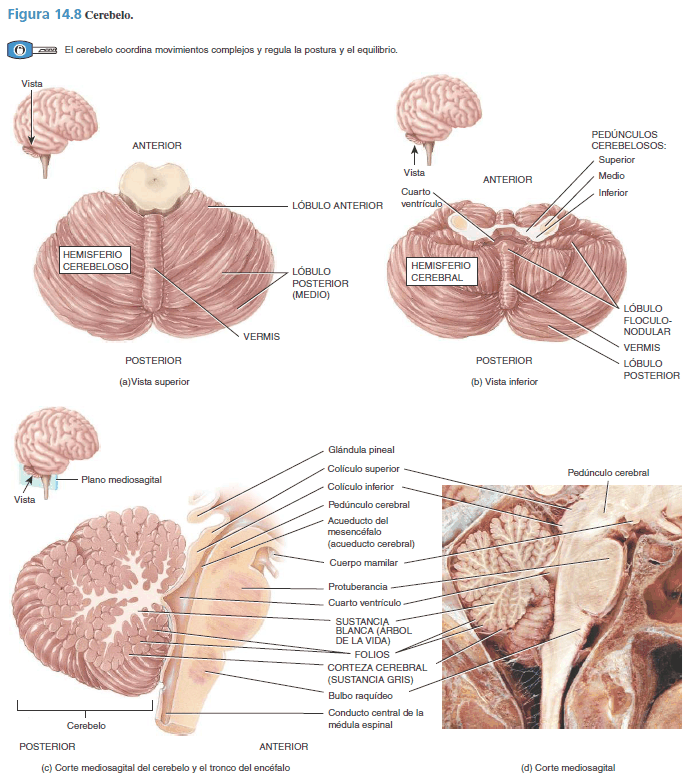
10. Una lesión de las vías motoras del hemisferio cerebral derecho debilita sobre todo:
11. Una persona tiene fuerza normal, pero no logra tocarse la punta de la nariz con los ojos cerrados y camina tambaleándose. ¿Qué región es la más probable?
12. Sigues con la mirada un auto que pasa sin proponértelo. ¿Qué estructura coordina ese reflejo visual?
El diencéfalo y el cerebro
El diencéfalo
Está encima del mesencéfalo, casi completamente rodeado por los hemisferios cerebrales, y rodea el tercer ventrículo. Tiene tres partes:
Tálamo
El 80 % del diencéfalo: dos masas ovaladas de sustancia gris. Es la estación de relevo: casi toda la información sensitiva hace escala aquí antes de llegar a la corteza. Uno de sus núcleos, el cuerpo geniculado lateral, lleva lo que ve la retina hasta el área visual.
Hipotálamo
Pequeño, debajo del tálamo, y uno de los grandes reguladores del cuerpo: controla el sistema autónomo, produce hormonas —conectado con la hipófisis— y regula la temperatura, el hambre, la sed, las emociones y el reloj biológico.
Epitálamo
Detrás y encima del tálamo. Su pieza principal es la glándula pineal, que secreta melatonina, más en la oscuridad que en la luz.
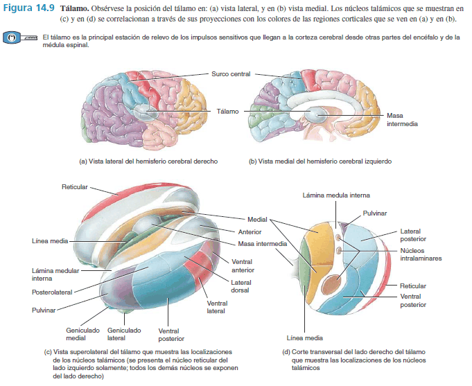
El cerebro
Es la parte más grande del encéfalo y, en palabras de Tortora, el «asiento de la inteligencia». Por fuera tiene la corteza cerebral, sustancia gris de solo 2 a 4 mm de espesor; debajo, sustancia blanca, y en la profundidad, más núcleos grises.
Como la corteza crece más rápido que lo que la sostiene, se pliega: los pliegues son giros o circunvoluciones, los surcos superficiales son surcos y los profundos, fisuras. La fisura longitudinal lo divide en dos hemisferios —con la hoz del cerebro dentro—, y el cuerpo calloso, una gran banda de sustancia blanca, los une por debajo.
Los lóbulos
Llevan el nombre del hueso que los cubre: frontal, parietal, temporal y occipital. Hay un quinto escondido en el fondo del surco lateral, la ínsula. Tres surcos hacen de frontera:
- El surco central separa el frontal del parietal. Justo delante está el giro precentral, con el área motora primaria; justo detrás, el giro poscentral, con el área somatosensitiva primaria.
- El surco lateral separa el frontal del temporal.
- El surco parietooccipital separa el parietal del occipital.
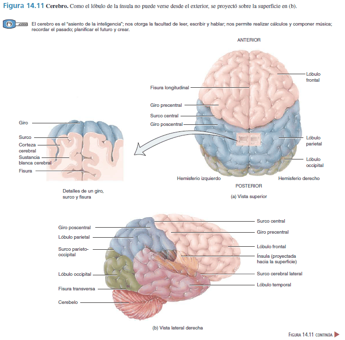
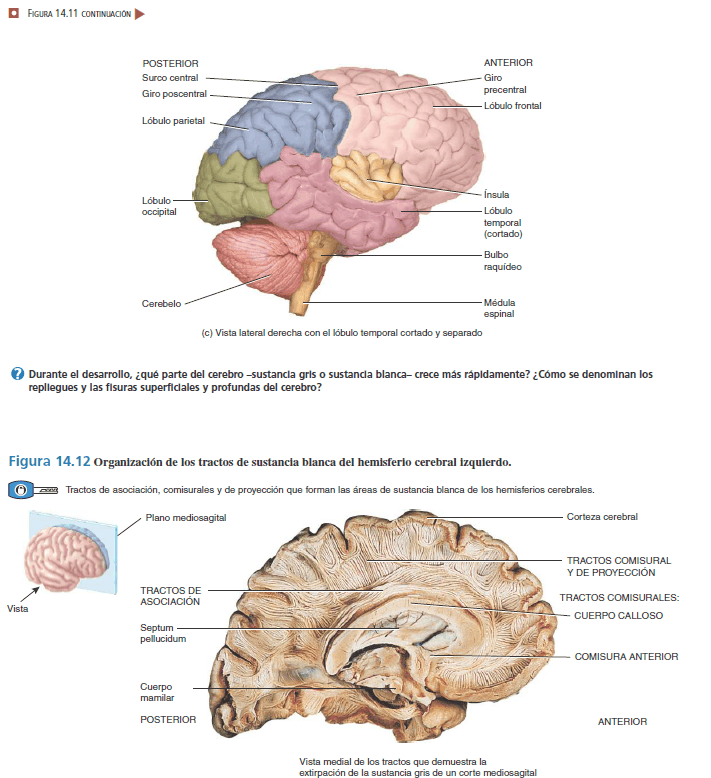
Las áreas: recibir, interpretar, ordenar
La corteza tiene áreas sensitivas, que reciben la información; áreas de asociación, que la interpretan; y áreas motoras, que ordenan movimientos. La que más te importa está en el polo posterior del lóbulo occipital: el área visual primaria, también llamada área 17.
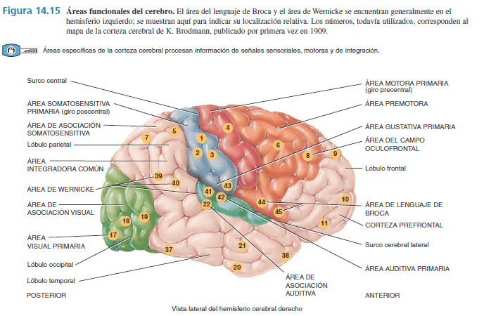
👁 Interfaz optométrica
Ver y reconocer son dos cosas distintas, y ocurren en áreas distintas. Tortora lo explica con dos pacientes. El que tiene dañada el área visual primaria pierde al menos parte de la visión. El que tiene dañada el área de asociación visual puede ver con normalidad y, sin embargo, no reconocer una lámpara o un cepillo de dientes con solo mirarlos. Los ojos pueden estar perfectos y la visión, incompleta.
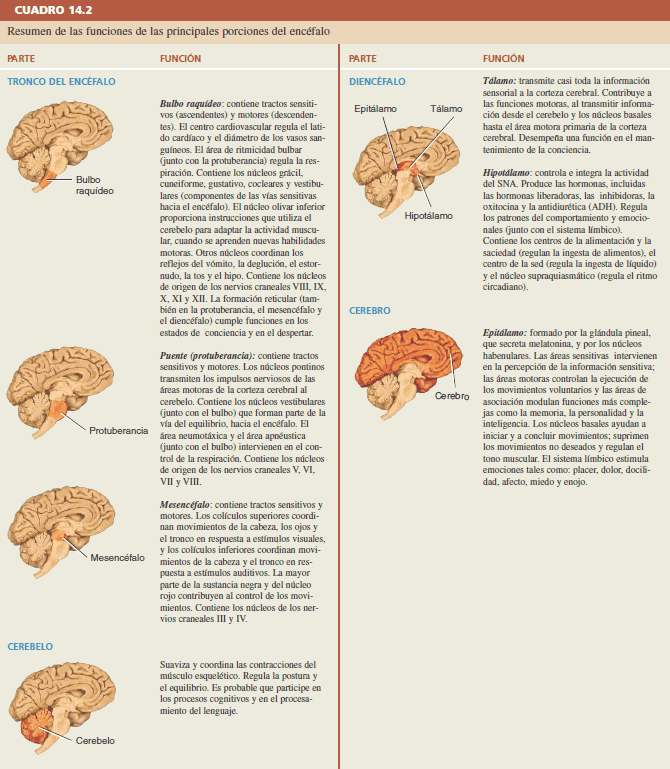
13. ¿En qué lóbulo está el área visual primaria?
14. ¿Por qué se dice que el tálamo es una «estación de relevo»?
Términos TA2 de la sesión
Toca la tarjeta para voltearla. El término en español y en el latín de la Terminologia Anatomica, y debajo por qué te importa a ti.
El encéfalo y la médula espinal.
👁 Donde se decide. Todo lo demás es cableado.
Todo el tejido nervioso fuera del SNC: nervios craneales y espinales, ganglios y receptores.
👁 Los doce pares craneales son SNP.
La célula que conduce la señal: cuerpo celular, dendritas y axón. No se divide.
👁 Conos, bastones, bipolares y ganglionares: la retina está hecha de ellas.
La prolongación única que conduce la señal hacia otra célula.
👁 Los axones de las ganglionares forman el nervio óptico.
Las células que sostienen, nutren y protegen a las neuronas. Cuatro tipos en el SNC y dos en el SNP.
👁 Más pequeñas y más numerosas que las neuronas.
Glía del SNC en forma de estrella; sostiene neuronas y rodea los capilares.
👁 Mantiene la barrera hematoencefálica.
Glía que forma la mielina dentro del SNC; uno solo mieliniza varios axones.
👁 Mielina en el SNC → oligodendrocito.
Glía que forma la mielina en el SNP; cada una envuelve un solo axón.
👁 Mielina en el SNP → Schwann.
Capas de lípidos y proteínas que aíslan el axón y aceleran la conducción.
👁 Es blanca: por eso la sustancia blanca se llama así.
Tejido con cuerpos neuronales, dendritas y axones sin mielina.
👁 Dentro en la médula, fuera en el cerebro.
Tejido formado sobre todo por axones con mielina.
👁 Fuera en la médula, dentro en el cerebro.
Grupo de cuerpos neuronales dentro del SNC.
👁 El núcleo oculomotor está en el mesencéfalo.
Grupo de cuerpos neuronales fuera del SNC.
👁 El ganglio ciliar está en la órbita.
Haz de axones dentro del SNC.
👁 Detrás del quiasma, el nervio óptico pasa a llamarse tracto óptico.
La meninge externa y gruesa; en el cráneo forma los senos venosos, la hoz y la tienda.
👁 Se continúa con la envoltura externa de los nervios.
La meninge media, delgada y sin vasos, parecida a una tela de araña.
👁 Sus vellosidades devuelven el LCR a la sangre.
La meninge interna, fina, con vasos y pegada al tejido nervioso.
👁 Entre ella y la aracnoides circula el LCR.
El espacio entre la aracnoides y la piamadre, lleno de líquido cefalorraquídeo.
👁 Es donde entra la aguja de la punción lumbar.
Líquido claro que amortigua, mantiene el medio químico y permite el intercambio con el tejido nervioso.
👁 Se forma y se reabsorbe al mismo ritmo: presión constante.
Red de capilares en la pared de los ventrículos, cubierta por células ependimarias, que fabrica el LCR.
👁 La fábrica del LCR.
La parte del SNC dentro del conducto vertebral, del bulbo hasta L2; de ella salen 31 pares de nervios.
👁 Conduce señales e integra reflejos.
Raíces lumbares y sacras que bajan por el conducto vertebral por debajo del final de la médula.
👁 Por eso la punción lumbar no lesiona la médula.
Bulbo raquídeo, protuberancia y mesencéfalo, entre la médula y el diencéfalo.
👁 De él salen el III, el IV, el V, el VI y el VII.
Relieve posterior del mesencéfalo que actúa como centro de reflejos visuales.
👁 Te deja seguir con la mirada lo que se mueve.
Parte posterior del encéfalo que coordina y corrige los movimientos y controla postura y equilibrio.
👁 Si falla: ataxia, con fuerza normal.
Estación de relevo de casi toda la información sensitiva hacia la corteza.
👁 Su cuerpo geniculado lateral lleva la visión a la corteza.
Regulador del sistema autónomo, de hormonas, temperatura, hambre, sed y reloj biológico.
👁 No confundirlo con el tálamo, su vecino de arriba.
La capa de sustancia gris, de 2 a 4 mm, plegada en giros, surcos y fisuras.
👁 El área visual primaria está en su polo occipital.
Gran banda de sustancia blanca que une los dos hemisferios.
👁 El haz de fibras más grueso del encéfalo.
Comprueba lo que aprendiste
Sin mirar arriba. Estas no repiten las anteriores: piden reconstruir, no reconocer.
15. Ordena el tronco del encéfalo de abajo arriba.
16. Señala la afirmación falsa sobre las meninges.
17. Un anestésico general deja a la persona inconsciente. ¿Sobre qué estructura actúa, según lo visto?
18. Tras caer de espaldas sobre el hielo y golpearse la parte alta del cuello, una persona respira de forma irregular y tiene alterado el ritmo del corazón. ¿Qué región es la más comprometida?
El nervio por dentro
Esta mañana estuvimos dentro del cráneo y de la columna. Ahora salimos con los cables. Un nervio es un haz de axones fuera del SNC, y está organizado exactamente como un músculo: en manojos de manojos, cada uno con su envoltura de tejido conectivo.
Endoneuro
Envuelve cada axón, tenga mielina o no. Es la capa más interna.
Perineuro
Agrupa axones en fascículos. Es la capa media, más gruesa.
Epineuro
Envuelve el nervio entero y rellena el espacio entre los fascículos. Es la externa.
¿Te suena? Es el mismo esquema que viste en la clase 7 para el músculo: endomisio alrededor de cada fibra, perimisio alrededor de cada fascículo, epimisio alrededor de todo. Cambia la terminación —-neuro por -misio—, no la lógica. Y hay un detalle que une esta sesión con la de la mañana: la duramadre se continúa con el epineuro de los nervios cuando salen del cráneo y de la columna.
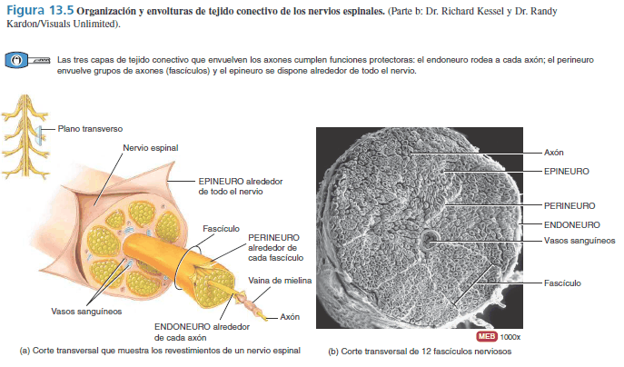
1. Dentro de un nervio, ¿qué envoltura rodea a cada axón por separado?
Los doce pares craneales
Se llaman craneales porque nacen del encéfalo, dentro de la cavidad craneal, y salen atravesando forámenes del cráneo —los mismos que estudiaste en la clase 6—. Son parte del SNP, igual que los 31 pares espinales, y son pares: hay uno de cada lado.
Cada uno tiene un número romano, que indica el orden en que salen del cráneo de adelante hacia atrás, y un nombre, que describe su función o su recorrido. Por su contenido hay tres grupos:
Sensitivos especiales
I, II y VIII. Llevan los sentidos especiales: olfato, vista, y audición y equilibrio.
Motores
III, IV, VI, XI y XII. Salen del encéfalo solo con axones motores. Tres de ellos —III, IV y VI— mueven el ojo.
Mixtos
V, VII, IX y X. Llevan axones sensitivos que entran al tronco del encéfalo y motores que salen de él.
Cuatro de ellos llevan además fibras parasimpáticas del sistema autónomo: el III, el VII, el IX y el X. Dos de esos cuatro trabajan en el ojo: el III en la pupila y el VII en la glándula lagrimal.
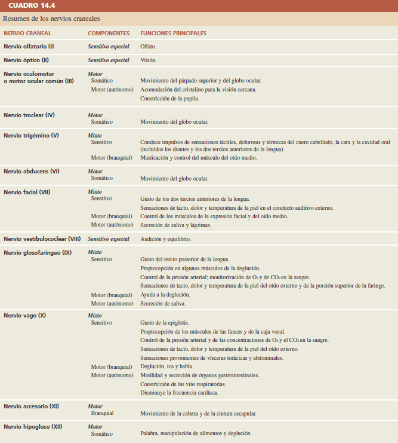
Ejercicio · Ubícalos sin mirar
La cara inferior del encéfalo, con los pares en amarillo y sin un solo nombre. Antes de abrir la respuesta, intenta numerarlos: empiezan adelante, bajo el lóbulo frontal, y avanzan hacia la médula.
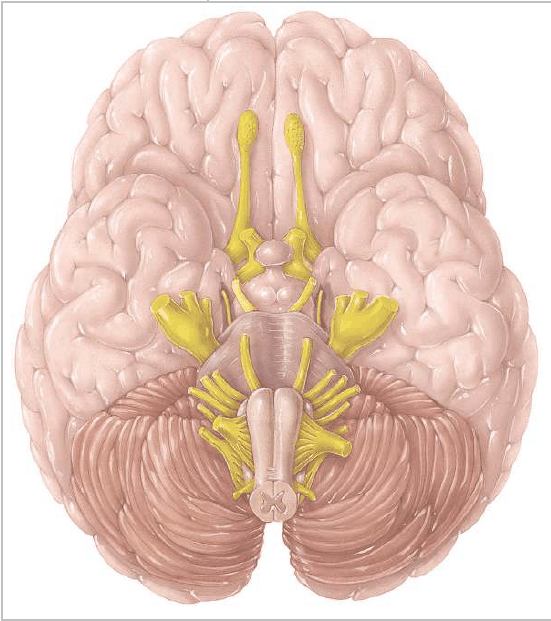
Ver las respuestas
Arriba, bajo los lóbulos frontales, los bulbos y tractos olfatorios (I). Detrás, los dos nervios ópticos (II) que se unen en el quiasma. Saliendo del mesencéfalo, entre los pedúnculos, el oculomotor (III); y rodeando el tronco desde atrás, el delgado troclear (IV). A los lados de la protuberancia, el grueso trigémino (V). En el borde inferior de la protuberancia, el abducens (VI) cerca de la línea media y, más lateral, el facial (VII) y el vestibulococlear (VIII). A los lados del bulbo, en fila, el glosofaríngeo (IX), el vago (X) y el accesorio (XI), que sube desde la médula; y por delante, entre la pirámide y la oliva, el hipogloso (XII).
2. ¿Cuál de estos grupos está formado solo por nervios motores?
3. ¿Qué indica el número romano de cada par craneal?
El II y la vía visual
El nervio óptico (II) es enteramente sensitivo. Su recorrido empieza en la retina: los conos y bastones captan la luz, pasan la señal a las células bipolares y éstas a las ganglionares. Los axones de todas las ganglionares de una retina salen del ojo por el disco óptico y forman el nervio óptico, que atraviesa el conducto óptico.
- Nervio óptico. Del ojo hacia atrás, uno de cada lado.
- Quiasma óptico. Unos 10 mm por detrás del globo, los dos nervios se juntan en forma de X y parte de sus fibras cruza al otro lado.
- Tracto óptico. Detrás del quiasma las fibras se reagrupan y cambian de nombre: ya están dentro del encéfalo.
- Cuerpo geniculado lateral del tálamo. Allí hace sinapsis la mayoría de los axones.
- Radiaciones ópticas. Los axones de las neuronas del tálamo se abren en abanico hacia atrás.
- Área visual primaria. En el lóbulo occipital —el área 17—, donde empieza la percepción visual.
Qué fibras cruzan en el quiasma
Cada retina tiene una mitad nasal —la del lado de la nariz— y una mitad temporal —la del lado de la sien—. En el quiasma, las fibras de la mitad nasal de cada retina cruzan al lado opuesto; las de la mitad temporal siguen por el mismo lado.
El resultado parece enrevesado y es de una lógica perfecta: lo que está en la mitad derecha del campo visual de los dos ojos acaba en el hemisferio izquierdo, y lo de la mitad izquierda, en el derecho. Cada hemisferio ve la mitad contraria del mundo — igual que cada hemisferio mueve la mitad contraria del cuerpo.
No todas las fibras van a la corteza. Unas pocas se desvían antes hacia el colículo superior, que controla los músculos que mueven el ojo, y hacia el núcleo pretectal, que controla los reflejos de la pupila y del enfoque. De esta desviación sale el reflejo pupilar de la estación 04.
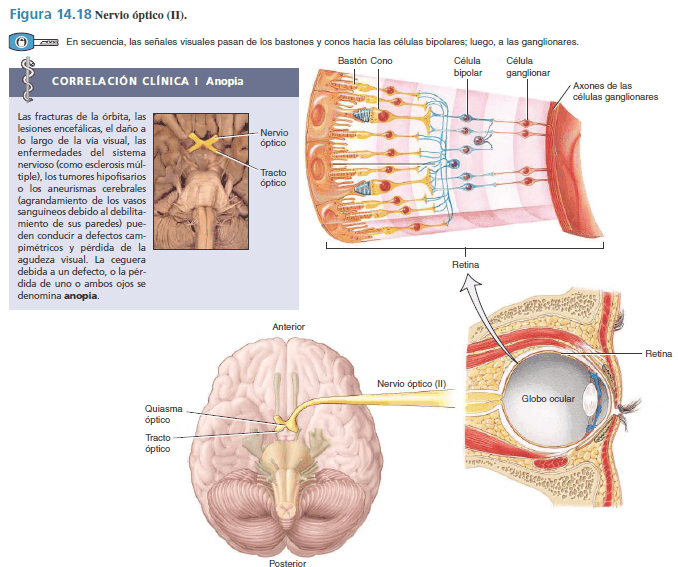
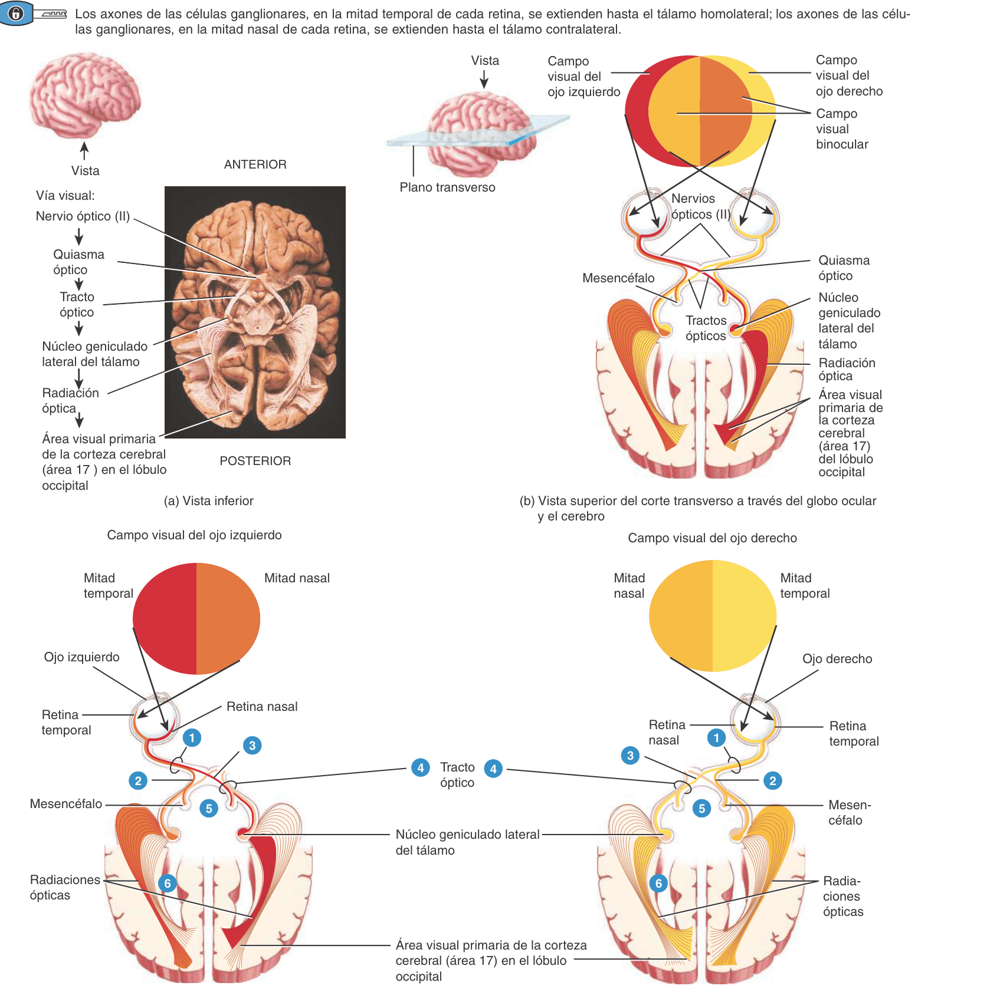
4. En el quiasma óptico, ¿qué fibras cruzan al lado opuesto?
5. Antes de llegar a la corteza, la mayoría de los axones del tracto óptico hacen sinapsis en:
6. Un objeto está en la mitad derecha de tu campo visual. ¿A qué hemisferio llega esa información?
III, IV y VI: los que mueven el ojo
Tres nervios motores controlan los músculos extrínsecos del ojo. Los tres salen del tronco del encéfalo y entran en la órbita por la fisura orbitaria superior. Aquí entra también lo que quedó pendiente de la clase de músculos: quién mueve qué.
Oculomotor (III)
Núcleo en el mesencéfalo. Es el que más músculos inerva: recto superior, recto medial, recto inferior, oblicuo inferior y el elevador del párpado superior. Lleva además las fibras parasimpáticas de la pupila y del enfoque.
Troclear (IV)
El más pequeño de los doce, y el único que sale por la cara posterior del tronco; sus axones cruzan al lado opuesto al salir. Inerva un solo músculo: el oblicuo superior.
Abducens (VI)
Núcleo en la protuberancia. Inerva un solo músculo, el recto lateral, que lleva el ojo hacia afuera: la abducción, de ahí el nombre.
Para no olvidarlo: recto lateral → 6, oblicuo superior → 4, todo lo demás → 3. Son dos excepciones y una regla. Y los músculos no trabajan solos: para mirar a la derecha se contraen a la vez el recto lateral derecho y el recto medial izquierdo mientras sus antagonistas se relajan. Los oblicuos mantienen estable la rotación del globo. Circuitos del tronco del encéfalo y del cerebelo coordinan los dos ojos.
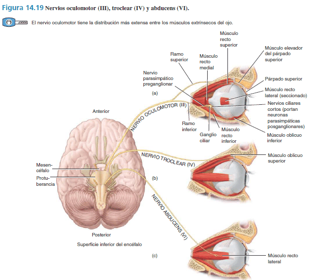

👁 Interfaz optométrica · Cómo se ve la lesión de cada uno
Tortora describe los tres cuadros, y se deducen del reparto de músculos:
III: el ojo queda desviado hacia abajo y hacia afuera
—solo le quedan el recto lateral (VI) y el oblicuo superior (IV)—, con el párpado caído, la
pupila dilatada, sin enfoque de cerca y con visión doble.
IV: estrabismo y visión doble.
VI: el ojo no puede ir hacia afuera más allá de la línea media y queda
desviado hacia adentro; visión doble.
Por eso estos pacientes inclinan la cabeza: buscan la posición en que los dos ojos vuelven a
apuntar al mismo sitio.
7. ¿Qué nervio es el único que sale por la cara posterior del tronco del encéfalo y cruza al lado opuesto?
8. Un paciente no puede llevar el ojo derecho hacia afuera y lo tiene desviado hacia adentro. ¿Qué nervio está afectado?
9. Un ojo desviado hacia abajo y hacia afuera, con la pupila dilatada, apunta a una lesión del:
La pupila y el enfoque
Dentro del ojo hay músculo liso, y el músculo liso no obedece al sistema somático sino al autónomo. El iris tiene dos músculos que hacen cosas opuestas, cada uno con su división:
Esfínter de la pupila
Fibras circulares. Con luz intensa se contrae y la pupila se achica: constricción. Lo ordena la división parasimpática, cuyas fibras viajan con el oculomotor (III).
Dilatador de la pupila
Fibras radiales. Con luz tenue se contrae y la pupila se agranda: dilatación. Lo ordena la división simpática, la misma de la «lucha o huida».
El III lleva fibras parasimpáticas también al músculo ciliar, que cambia la forma del cristalino para ver de cerca: la acomodación. Todas estas fibras hacen escala en el ganglio ciliar, un ganglio del autónomo que está en la órbita, por fuera del nervio óptico. Recuerda la regla de la mañana: está fuera del SNC, así que es ganglio y no núcleo.
El reflejo pupilar a la luz, pieza por pieza
Aquí vuelven las cinco piezas del arco reflejo de la sesión 1:
- Receptor: los fotorreceptores de la retina.
- Vía sensitiva: el nervio óptico (II).
- Centro integrador: el núcleo pretectal, en el tronco del encéfalo —por eso es un reflejo craneal—.
- Vía motora: fibras parasimpáticas del oculomotor (III), con escala en el ganglio ciliar.
- Efector: el esfínter de la pupila.
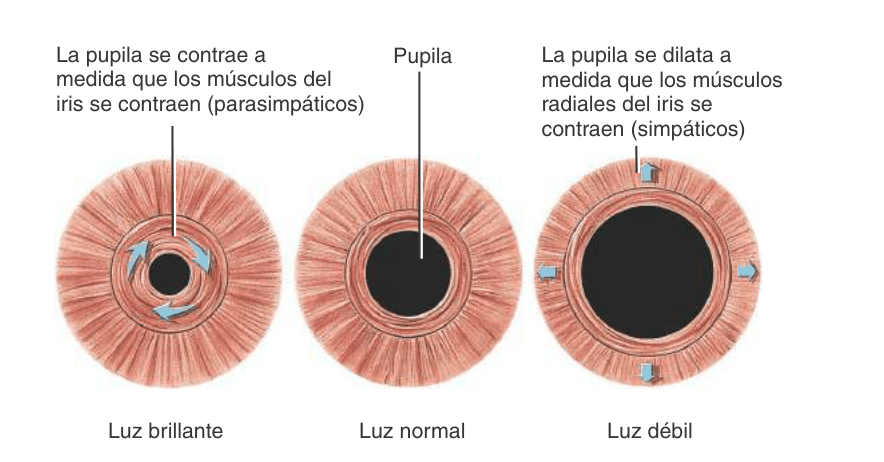
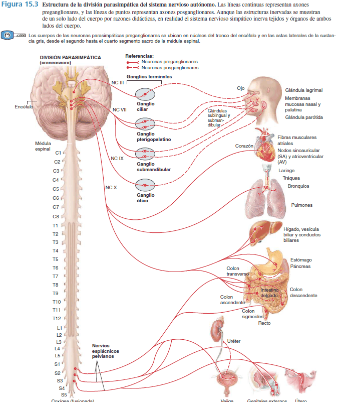
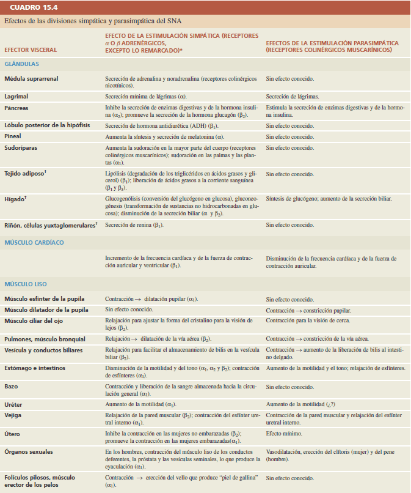
10. Con luz tenue la pupila se dilata. ¿Qué división del autónomo lo ordena y qué músculo se contrae?
11. En el reflejo pupilar a la luz, ¿por dónde viaja la orden que contrae el esfínter?
V y VII: sentir y cerrar
El trigémino (V)
Es el más grande de los doce y es mixto. Sale de la protuberancia, tiene un ganglio con los cuerpos de sus neuronas sensitivas —el ganglio del trigémino— y, como dice su nombre, se divide en tres ramos:
Oftálmico (V₁)
El más pequeño. Entra en la órbita por la fisura orbitaria superior. Lleva la sensibilidad del globo ocular, el párpado superior, la glándula lagrimal, la frente y la mitad anterior del cuero cabelludo.
Maxilar (V₂)
Sale por el foramen redondo. Lleva la sensibilidad del párpado inferior, la mucosa nasal, los dientes superiores y el labio superior.
Mandibular (V₃)
El más grande; sale por el foramen oval. Lleva la sensibilidad de la parte inferior de la cara y es el único con parte motora: los músculos de la masticación.
Sus axones sensitivos llevan tacto, dolor y temperatura. Cuando algo lo presiona o lo inflama aparece la neuralgia del trigémino: un dolor agudo y cortante que dura de segundos a un minuto.
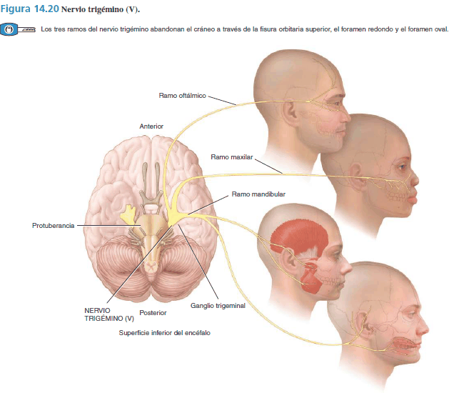
El facial (VII)
También mixto, sale de la protuberancia. Es el nervio del cuerpo que más músculos inerva: todos los de la expresión facial, entre ellos el orbicular de los ojos, como viste en la clase 7. Además lleva el gusto de los dos tercios anteriores de la lengua y fibras parasimpáticas para la glándula lagrimal —la que produce la lágrima— y para dos glándulas salivales.
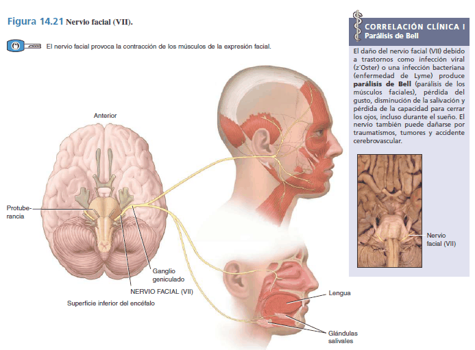
👁 Interfaz optométrica · El reparto del trabajo en el párpado y el ojo
Cuatro pares se reparten el ojo y sus alrededores, y conviene tenerlos separados: el II ve; el III, el IV y el VI mueven el globo, y el III además abre el párpado; el V₁ siente —el globo, el párpado superior y la frente—; y el VII cierra el párpado y hace llorar a la glándula lagrimal. Casi todo lo que vas a explorar en consulta cae en uno de estos cinco.
12. ¿Qué nervio lleva la sensibilidad del globo ocular, del párpado superior y de la frente?
13. ¿Qué par craneal lleva las fibras autónomas que hacen secretar a la glándula lagrimal?
Los otros seis pares
No se cruzan con el ojo, pero completan la lista y conviene reconocerlos. Una línea para cada uno:
Olfatorio (I) · sensitivo
El olfato. Sus axones atraviesan la lámina cribosa del etmoides y terminan en los bulbos olfatorios.
Vestibulococlear (VIII) · sensitivo
La audición —ramo coclear— y el equilibrio —ramo vestibular—, desde el oído interno.
Glosofaríngeo (IX) · mixto
El gusto del tercio posterior de la lengua, la deglución y la saliva de la parótida.
Vago (X) · mixto
El de distribución más amplia: faringe y laringe, y las vísceras del tórax y el abdomen. Disminuye la frecuencia cardíaca.
Accesorio (XI) · motor
Nace en la médula cervical y sube por el foramen magno. Mueve el esternocleidomastoideo y el trapecio: la cabeza y los hombros.
Hipogloso (XII) · motor
Los músculos de la lengua, para hablar y tragar.
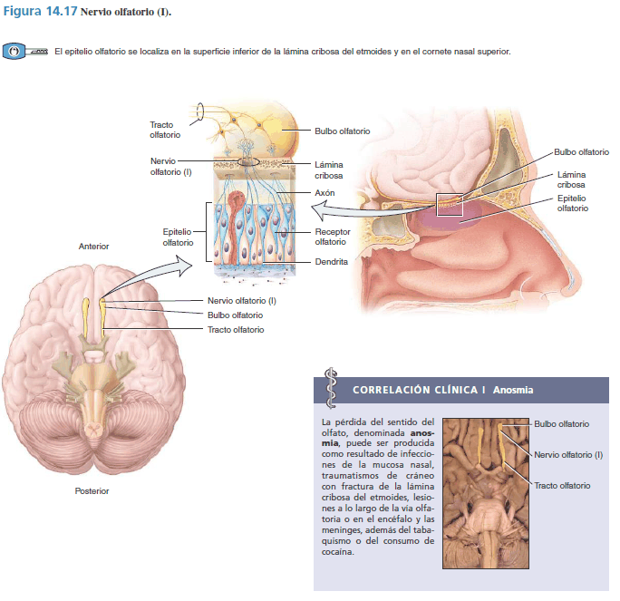
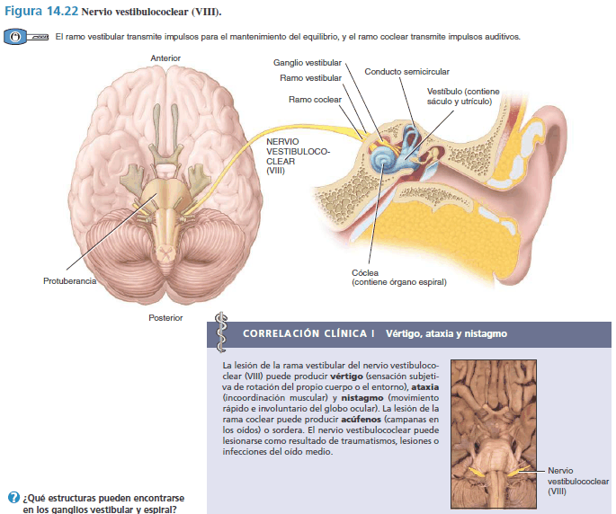
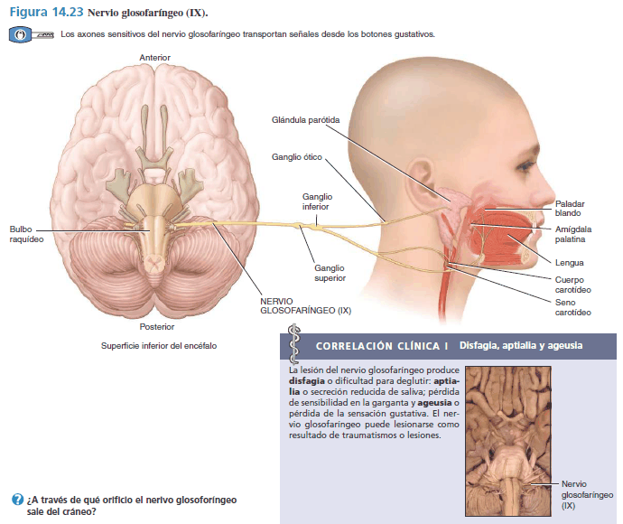
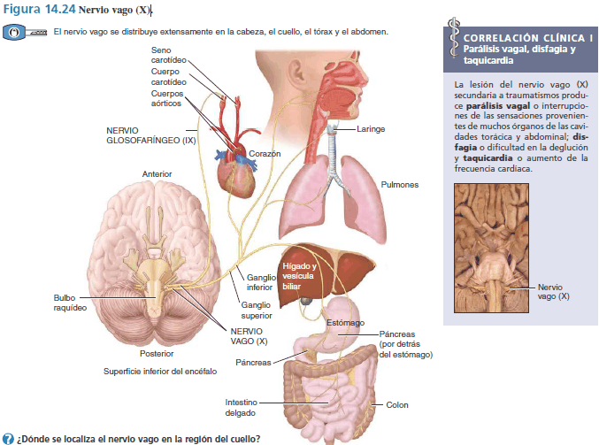
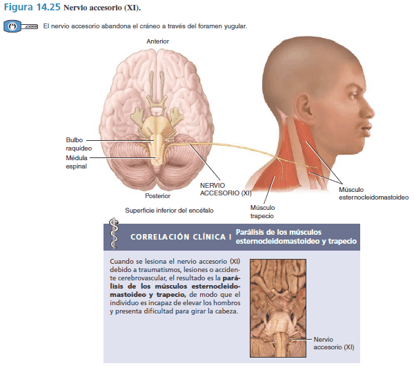
Términos TA2 de la sesión
Cada uno de los doce pares que nacen del encéfalo y salen por forámenes del cráneo.
👁 El número indica el orden de salida, de adelante atrás.
La envoltura de tejido conectivo de cada axón dentro de un nervio.
👁 Como el endomisio del músculo.
La envoltura que agrupa axones en fascículos.
👁 Como el perimisio.
La envoltura externa del nervio entero.
👁 La duramadre se continúa con él.
El par II: los axones de las células ganglionares de la retina, hasta el quiasma.
👁 Enteramente sensitivo: solo visión.
El cruce en X de los dos nervios ópticos, donde cruzan las fibras de la mitad nasal de cada retina.
👁 Un cruce parcial: las temporales no cruzan.
Las fibras visuales detrás del quiasma, ya dentro del encéfalo, camino del tálamo.
👁 Mismo cable, otro nombre: dentro del SNC es tracto.
Núcleo del tálamo donde hace sinapsis la mayoría de los axones del tracto óptico.
👁 La escala de la visión antes de la corteza.
Los axones que van del cuerpo geniculado lateral al área visual primaria del lóbulo occipital.
👁 El último tramo de la vía visual.
El par III: rectos superior, medial e inferior, oblicuo inferior y elevador del párpado; y fibras parasimpáticas a la pupila y al músculo ciliar.
👁 Si falla: ojo abajo y afuera, pupila dilatada.
El par IV: el más pequeño; sale por detrás del tronco, cruza e inerva el oblicuo superior.
👁 Oblicuo superior → 4.
El par VI: nace en la protuberancia e inerva el recto lateral, que abduce el ojo.
👁 Recto lateral → 6. Si falla, el ojo no va hacia afuera.
Ganglio parasimpático de la órbita donde hacen escala las fibras del III hacia la pupila y el músculo ciliar.
👁 Fuera del SNC: por eso es ganglio.
Músculo liso circular del iris; achica la pupila con luz intensa.
👁 Parasimpático, por el III.
Músculo liso radial del iris; agranda la pupila con luz tenue.
👁 Simpático.
El par V, el más grande: sensibilidad de la cara en tres ramos y motor de la masticación.
👁 Su ramo oftálmico siente el globo ocular.
El ramo V₁ del trigémino; entra por la fisura orbitaria superior.
👁 Globo ocular, párpado superior, glándula lagrimal y frente.
La glándula que produce la lágrima, en la parte superolateral de la órbita.
👁 Secreta por orden del VII; siente por el V₁.
Comprueba lo que aprendiste
Cuatro más, y ninguna se contesta buscando arriba.
14. ¿Cuál de estos músculos inerva el oculomotor (III)?
15. Señala la afirmación falsa sobre los pares craneales.
16. Ordena la vía visual desde la retina hasta la corteza.
17. The trigeminal nerve (V) has three branches. Which one enters the orbit through the superior orbital fissure?
Volvemos a las cinco preguntas
Las mismas de esta mañana. Léelas otra vez y comprueba cuántas contestas ahora con seguridad.
1 · ¿Por qué te mareas al levantarte de golpe?
Porque el encéfalo no tiene reservas. Pesa el 2 % del cuerpo pero consume el 20 % del oxígeno y de la glucosa, y sus neuronas fabrican energía casi solo con esas dos cosas, sin almacenarlas. Al ponerte de pie de golpe, por un instante llega menos sangre a la cabeza, y hasta una disminución leve del flujo produce desorientación o, si es mayor, pérdida del conocimiento. Uno o dos minutos sin irrigación ya alteran su función.
2 · ¿Por qué una lesión izquierda debilita la mano derecha?
Por la decusación de las pirámides. En el bulbo raquídeo, justo encima de la médula, cerca del 90 % de los axones motores de cada lado cruza al lado opuesto. Así, el hemisferio izquierdo gobierna la mitad derecha del cuerpo. Y en la sesión 2 viste que la visión hace algo parecido: cada hemisferio recibe la mitad contraria del campo visual.
3 · ¿Cómo entra la aguja sin tocar la médula?
Porque la médula es más corta que la columna: termina en L2, en el cono medular, mientras que las meninges y el LCR siguen hasta S2. Por debajo de L2 solo quedan las raíces de la cola de caballo flotando en el LCR. La aguja se introduce entre L3 y L4 o entre L4 y L5, en el espacio subaracnoideo, donde hay líquido y no hay médula.
4 · ¿Quién decidió retirar la mano antes de sentir el calor?
La médula espinal, por un arco reflejo. El receptor de la piel manda la señal por una neurona sensitiva a la médula; allí el centro integrador decide y una neurona motora contrae el músculo. Todo ocurre antes de que la información llegue a la corteza, que es donde «te enteras». El reflejo pupilar funciona igual, con el centro integrador en el tronco del encéfalo.
5 · ¿Qué detiene al antibiótico?
La barrera hematoencefálica. Los capilares del encéfalo tienen sus células unidas por uniones estrechas, una membrana basal gruesa y la cubierta de los astrocitos. Dejan pasar lo liposoluble —oxígeno, alcohol, anestésicos— y la glucosa por transporte activo, pero no las proteínas ni muchos antibióticos. Protege al encéfalo de lo nocivo y, por lo mismo, le cierra el paso a muchos fármacos.
Lo que hay que llevarse de hoy. El sistema nervioso tiene un centro que decide —encéfalo y médula, protegidos por hueso, meninges, líquido y una barrera— y una periferia de nervios que entran y salen. En la cabeza, esa periferia son doce pares, y cinco de ellos trabajan en el ojo: el II ve, el III, el IV y el VI lo mueven, el V₁ lo siente y el VII cierra el párpado. Por eso un ojo que no se mueve, una pupila que no se contrae o un párpado que no cierra pueden ser la primera señal de algo que ocurre dentro del cráneo.